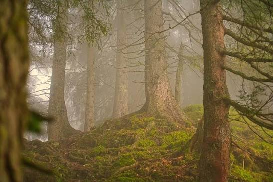
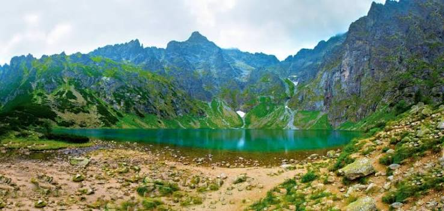
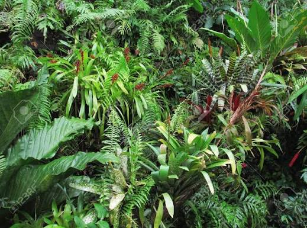
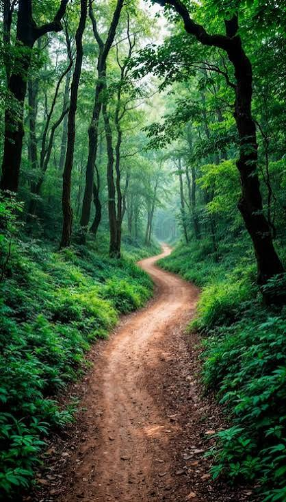
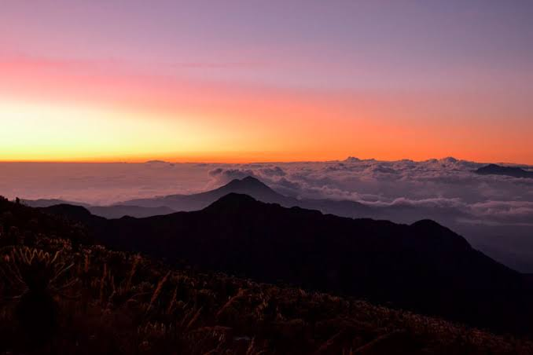

Galería de Ecosistemas
Una muestra visual de la riqueza natural protegida en nuestro territorio nacional.
Paisajes en Cuadrícula (Grid)

Bosques de Niebla

Valles Hidrográficos
Postales Rápidas (Flex)

Flora Tropical

Senderos Seguros
